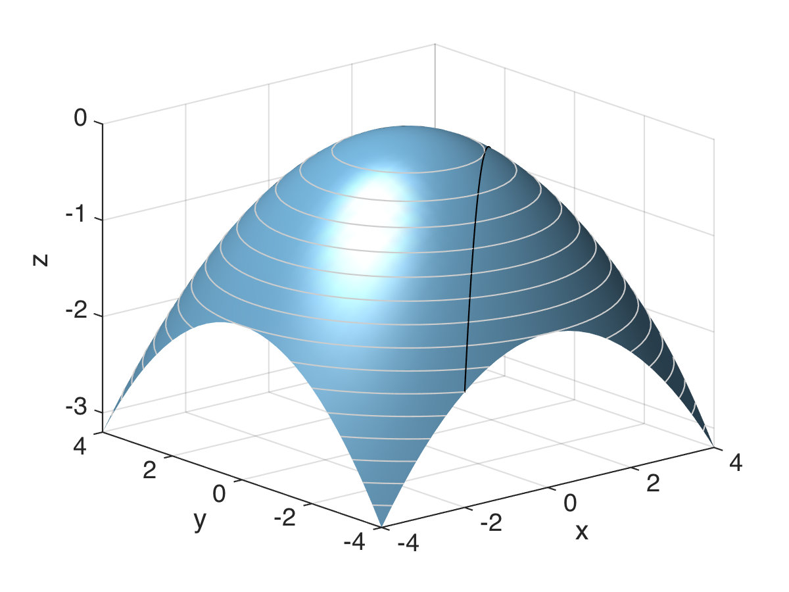

Matematik
Matematik
Dan Mønster og Carsten Andersen
Denne hjemmeside indeholder online noter, materiale og opgaver til faget Matematik på 1. semester af HA og SOC uddannelserne på Aarhus BSS. Klik på navigationsknappen øverst til venstre (de tre vandrette streger) for at vise indholdsfortegnelsen.
